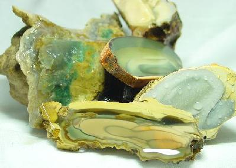

Hart
Mountain Rough

Hart Mountain
Jasper is found in Southeastern Oregon and is known as the original
"porclean jasper". You need to be part mountain-goat
to find this jasper as it occurs above the 7,000ft elevation mark
on Hart Mountain.
Linited
amounts of rough is available here for $28/oz.
Update!!
August 13th 2003
At the
Lakeview show on August 11th 2002 a collection of 78 pieces of
sizes from a large marble to the size of your fist sold for $21,000!!!!
The locals who hunt Hart Mountain regularly are searching at the
9000 foot mark and are collecting very little material. Three
individuals who sell the material have now gone to a minimum $35/oz
wholesale and I fear the price is headed up again. It looks like
this is another material on the "endangered species"
list.
Home|
Jasper | Agates
|Opal | Facet Materials |
Finished Gems | Finished Jewelry
Collectables & Collections
| Specials | Equipment
| People Stories
Ordering Info | E-mail
Us